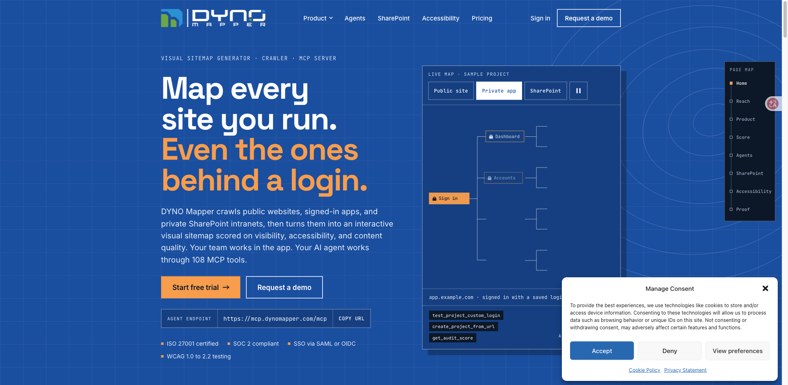

把站点爬成一张可视化地图，再顺手给每个页面打分 —— 结构、内容、可访问性一起看。
树状站点地图，每个节点挂内容与可访问性指标，右侧是站点体检
DYNO Mapper 的视觉语言：深蓝顶栏 + 浅蓝网格画布，节点是白底细边的小卡片，右上角一枚 A/B/C 彩色评级圆点，卡片里塞着字数、图片数这类内容盘点数字。它不是画图工具，是「把图当仪表盘」—— 每个节点都带着可被排序的指标。

一个可视化 sitemap 生成器 + 站点审计工具：爬公开网站、登录后的应用和 SharePoint Online，把结构画成可交互地图，再叠加内容盘点、内容规划和按确定性排序的可访问性检测，最后汇总成一个站点健康分。
有 API，支持 SAML / OIDC 单点登录 —— 说明它的用户里有企业 IT 和内网负责人。